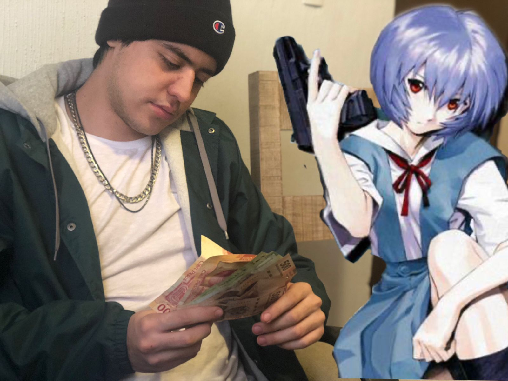

Abstracto
por Mikel Elizondo

l arte abstracto es el contrario del figurativo (es decir, la representación de objetos identificables mediante imágenes reconocibles). Por tanto la abstracción no representa «cosas» concretas de la naturaleza sino que propone una nueva realidad. Propone un «arte puro» mirando más allá de nuestra realidad. Si bien desde el primer arte elaborado por el ser humano ya tenemos ejemplo de abstracción (desde las cuevas prehistóricas hasta las decoraciones en iglesias románicas), es oficialmente Kandinsky el primero en teorizar sobre esto (aparte tenemos a los neoplasticistas o a los suprematistas, y un poco antes figuras aisladas como la de Hilma af Klint).
El arte abstracto existe independientemente de la realidad, la aleja. El arte abstracto no representa nada en realidad, pero como eso es imposible (¡hasta un lienzo en blanco representa algo!) los artistas abstractos tiraron (tiran) por dos vertientes diferenciadas: Por un lado al arte abstracto expresivo: subjetivo y espontáneo, improvisado a veces, donde el protagonismo es de la expresividad del artista, que prescinde de estructura y se vuelca en el gesto, el material y el sentimiento que provoca la obra. Es por tanto altamente ambigüo e interpretable. Por otro está el arte abstracto geométrico: que pretende ser objetivo y universal, planificado, en la que la composición es estructurada y que evita toda expresividad mediante el uso de la geometría. Suele defender una factura impersonal y pretende evocar claridad y precisión.

El color en el arte abstracto era junto a la forma una expresión artística más, propia de este tipo de arte. Mientras que por ejemplo en el cubismo, su forma de expresarse era través de formas reducidas a formas geométricas, en el arte abstracto, la libertad cromática, el hecho de superponer colores, de mezclarlos unos encima de otros, con variaciones dentro del mismo, de tonalidades más claras, más oscuras… es una característica del arte abstracto.
Si por algo se denomina abstracto, es por eso mismo, porque no hay formas que representen la realidad, queremos buscar en ellas algo coherente, algo que se asemeje a personas, elementos que nos rodean en nuestro mundo, sin embargo, esas formas a veces no son más que líneas rectas y curvas que se entrecruzan u formas geométricas, pero sin ningún sentido.
Esta es otra de las características del arte abstracto. Hay quienes intentar buscar en el arte abstracto algo bello, pero siempre relacionado con la realidad más próxima, olvídense de eso, el arte abstracto está ligado al concepto de belleza, en la obra en sí misma, y… te puede gustar o no.
Los materiales es otra de las innovaciones que se va a dar en el arte abstracto al igual que la técnica. Hasta el momento habíamos escuchado que se pintaba con oleos, acuarelas, temperas, sin embargo, ahora, era la pintura acrílica lo más utilizado. En cuanto a técnicas, una de las más conocidas es el Action Painting que consiste en salpicar la superficie de un lienzo con pintura de manera enérgica y espontánea.